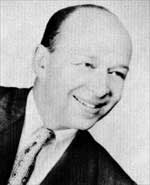
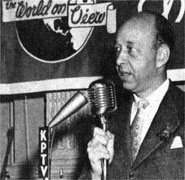
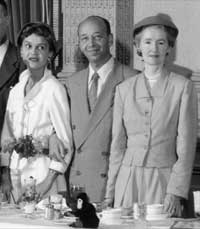
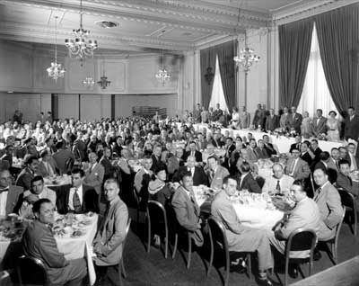
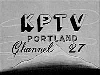

|
Herbert Mayer's
Inauguration Address
Saturday September 20, 1952, Benson Hotel,
Portland, Oregon
On Saturday, September 20, at 4:30 p.m. the first program to be broadcast by KPTV began in Portland, Oregon. At that time, the station's signature appeared on the screen, and a voice--unidentified at the outset--introduced the program about to become the first of its kind. Following is that introduction given to Commercial UHF broadcasting:
"Ladies and gentlemen, good afternoon. This is Television Station
KPTV-Portland, the World on View, Channel 27. We are signing on the air this 20th day of September, 1952, in accordance with authority granted to us by the Federal Communications Commission.

"You are about to witness the inauguration of television in Portland, and the first commercial UHF broadcast in history. In a few minutes you will see a motion picture entitled "Success Hill," produced and sponsored by the Radio Corporation of America. This film depicts the story of a famous experimental television transmitter. To us in Portland as we watch this picture, it will be interesting to realize that we are seeing the very transmitter which is now at work for us here, and which
is giving us the visual story of its own history. This is the only transmitter of its kind in the world! It was built by RCA and used by NBC's
experimental station, KC2XAK, which concluded its operations August 25th in Bridgeport, Conn., at the other side of the nation.
"On that day, a large crew of trained and skilled engineers from NBC, RCA, Adler Communications Laboratory and Empire Coil Company participated in the dismantling of the equipment. At the same time, expert tower men began to take down the 210-foot
heavy-duty tower which now stands so majestically at the summit of Council Crest.
"In addition to the shipment of the transmitter in Bridgeport, many
other items of equipment had to be built and procured. New crystals tuned for Channel 27 were ground and aged. The
filterplexer, a complicated and essential part of the equipment, had to be completely remodeled. This was taken
immediately by Empire Coil Company's truck to Portland, Maine, where it was worked upon around the clock. An entirely new transmitting
antenna for use on Channel 27 had to be built.
|  |
|
Founder Herbert Mayer is flanked by his wife (left) and
Portland Mayor Dorothy McCullough-Lee at the sign-on ceremony at the Hotel
Multnomah, earlier in the day. |
"Film cameras and a whole long list of related and auxiliary equipment were shipped here by air. A special
express car attached to a passenger train was the transportation medium used to bring our 41-foot antenna here on schedule.
"On that same day, August 25th, at this side of the nation, on Council Crest here in Portland, a ground-breaking ceremony took place. At that time, Empire Coil Company was accorded a heart-warming welcome by civic leaders of the city. During the ensuing period, rapid preparations were made here to house the transmitter, to prepare foundations for the tower, to provide adequate power and to make available video and audio network service over the telephone lines.
"Many ifs, ands, and buts hung over us during that period after August 25th. But on September 13th we were ready to go, except that approval of FCC had yet to be obtained. This was granted us September 17th. September 18th, we tested our equipment-and to our great relief the signal proved excellent. Today our first television program is about to begin.
"We feel that this rapid installation has served a major purpose for you, our television audience.
"First, it will enable us to give you television this fall. We know that many of you want to see the world series baseball games, the football games, and other major sports events this year. By virtue of our being ready at present, they will be yours to enjoy. The election campaign
and the forthcoming election itself may now also be followed by you visually. And the many delightful entertainment programs to be shown will, we hope, add
to your pleasure of living. And last but not least, religious and educational programs will offer you many benefits of high value.
"We did not disclose this
earlier-on-the-air date until recently, because we weren't sure of it ourselves and because we thought that nondisclosure would help to avoid the sale and distribution of bootlegged and defective sets in this area. Such a development might have caused you many disappointments, as it did residents of Denver. We are glad that condition has been avoided here.
"Before this first program begins, I wish to express deepest appreciation to Mayor Dorothy McCullough Lee and to members of the City Council, who, through their immediate attention to the matter at hand, made available to us a site on Council Crest, which we believe to be the best location for Portland television service. The Hoffman Company "rubbed Aladdin's lamp" and there before us was our transmitter building, a miracle of speed. The Pacific Telephone and Telegraph Company and the Portland General Electric Company did a splendid job in aiding us to complete our installations on schedule. RCA and NBC have had their executive personnel and engineers working with our own engineers and staff tirelessly to get the necessary equipment installed and on the air at the earliest moment. They, too, did a magnificent job.
"Congratulations to all of these people on the fine contributions they have made. Without their splendid help this result could not have been achieved.
"To bring you good television service quickly, has been our one prevailing desire during the past 25 days. It was to achieve that
goal that so many of us have worked so hard. We sincerely hope that this effort will prove
to be worth your while and that KPTV will provide you with a new source of enjoyment
and happiness. To that end we dedicate this station, today.

"My name is Herbert Mayer, and this is indeed a thrilling and happy day for my family and for me. We all thank
you from the bottom of our hearts for your warm welcome and hospitality.
"And now the historic moment has arrived.
The eyes of the nation are focused on you here today. The success of UHF in Portland will mean great things for that wonderful service across the land. Ironically enough, this
city--the largest city heretofore unserved by television--is the pioneer of the United States and the world in this great new television medium--UHF--soon to serve millions of your
fellow-citizens from coast to coast. And so, let us now witness the inauguration of television in Portland and the first commercial UHF broadcast in history!"
 
This
page
last
updated
on
August 17, 2025
|